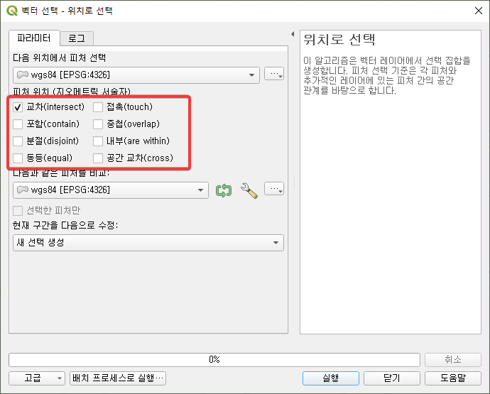
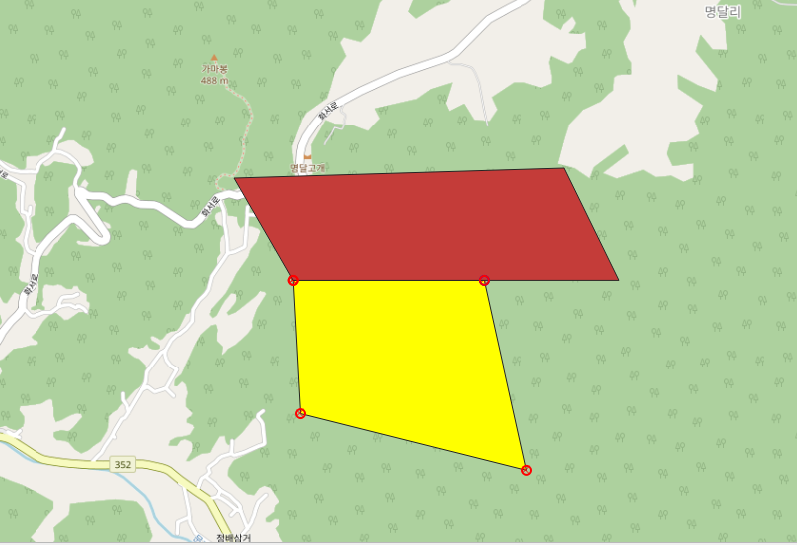
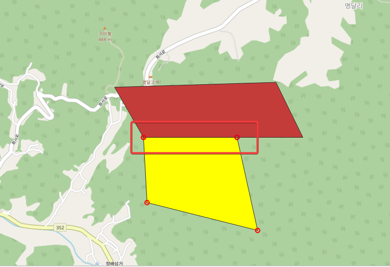
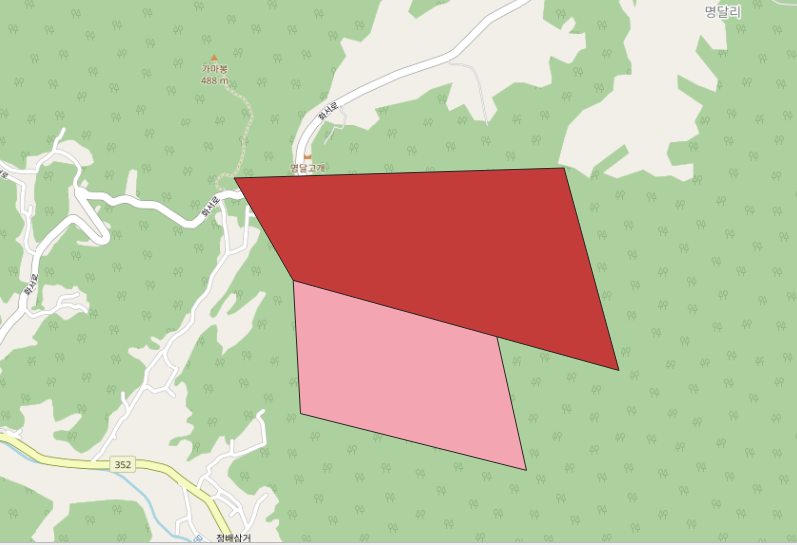

연습문제
1. Open Street Map 위에 GPS로 관측한 값으로 정확하게 위치 표시하기
주안점
- Open Street Map의 좌표체계는 EPSG:3857이다.
- GPS에서 관측한 값의 좌표체계는 EPSG:4326(WGS-84)이다.
해결책
- QGIS는 각 레이어의 좌표체계가 달라도 실시간으로 투영하여 렌더링하기 때문에 각 레이어간의 위치가 정확하게 맞춰진다.
작업 순서
- OSM 레이어를 추가한다.(EPSG:3857)
- 새 Shape File 레이어를 추가한다. EPSG:4326
- 원하는 위치에 대략의 모양으로 건물의 모양을 잡는다.
- 편집 모드를 켠다
- 꼭짓점 도구를 켠다.
- 건물 각 꼭짓점의 위치를 오른쪽 클릭한다.
- 꼭짓점 편집기에서 5개의 꼭짓점 모두 정확한 GPS 입력값으로 변경한다.
2. 건물의 면적 구하기
작업 순서
- 필드계산기를 연다.
- 가상필드를 추가한다.
- 계산식으로 area 를 입력한다.
3. 공간정보 분석 위치로 선택 예제 만들기

위 8가지 feature 위치에 대해 잘 설명할 수 있는 샘플을 만들어보자.
각 항목 설명
교차(intersect)
가장 넓은 개념으로 두 feature가 접촉하거나 겹치는 경우를 모두 포함하는 경우 선택됨

접촉(touch)
두 feature가 경계선에서만 만나는 경우 선택됨

 되는 경우
 안되는 경우
포함(contain)
위에서 선택한 feature가 아래에 선택한 feature를 포함하는 경우(위에서 선택한 feature가 더 커야 함) 위에서 선택한 feature가 선택됨
중첩(overlap)
두 feature가 서로 겹치지만 어느 한쪽이 다른 쪽을 완전히 포함하거나 똑같지는 않는 경우
분절(disjoint)
두 feature 사이에 공통된 부분이 전혀 없는 경우
내부(are within)
위에서 선택한 feature가 아래에 선택한 feature의 내부에 있는 경우 위에서 선택한 feature가 선택됨. 포함(contain)의 반대.
동등(equal)
두 feature의 영역이 완전히 같을 때 선택됨
공간교차(cross)
위에서 선택한 feature가 아래에 선택한 feature를 가로지를 때 선택됨. line string과 polygon간에 성립하며, polygon:polygon이나 point:point 간에는 성립하지 않음.